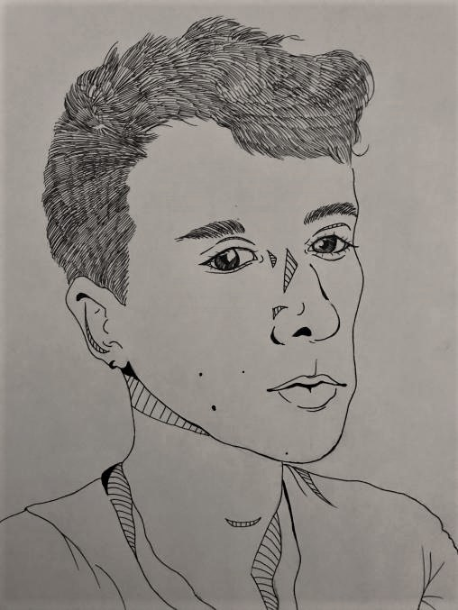
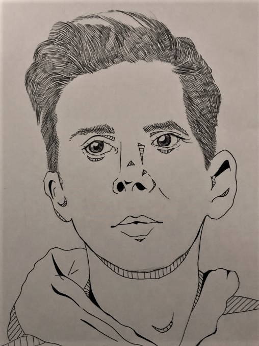
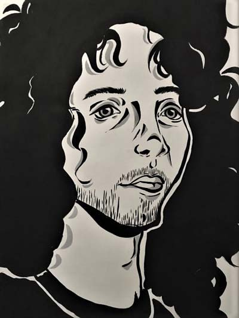
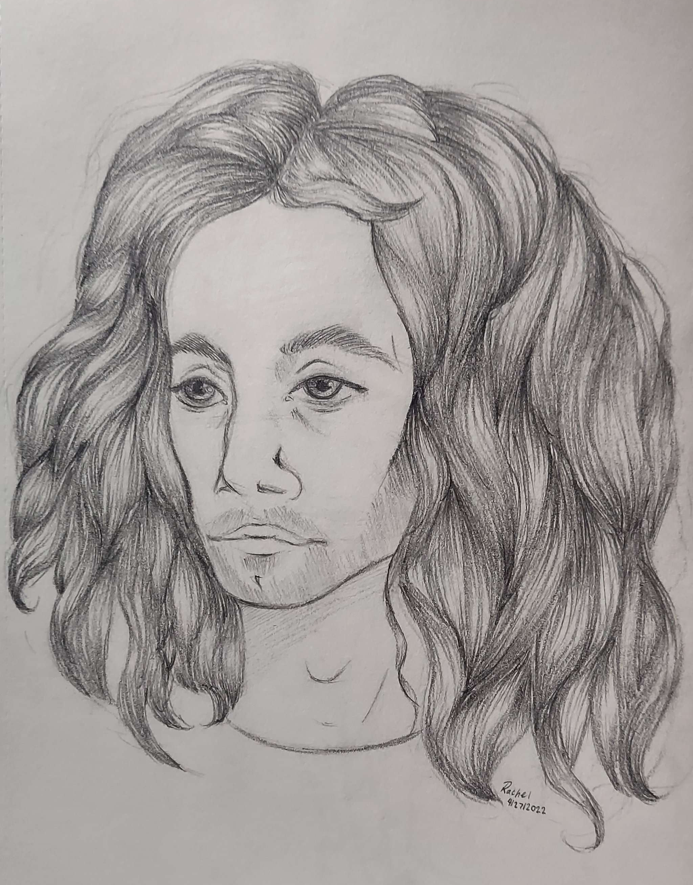
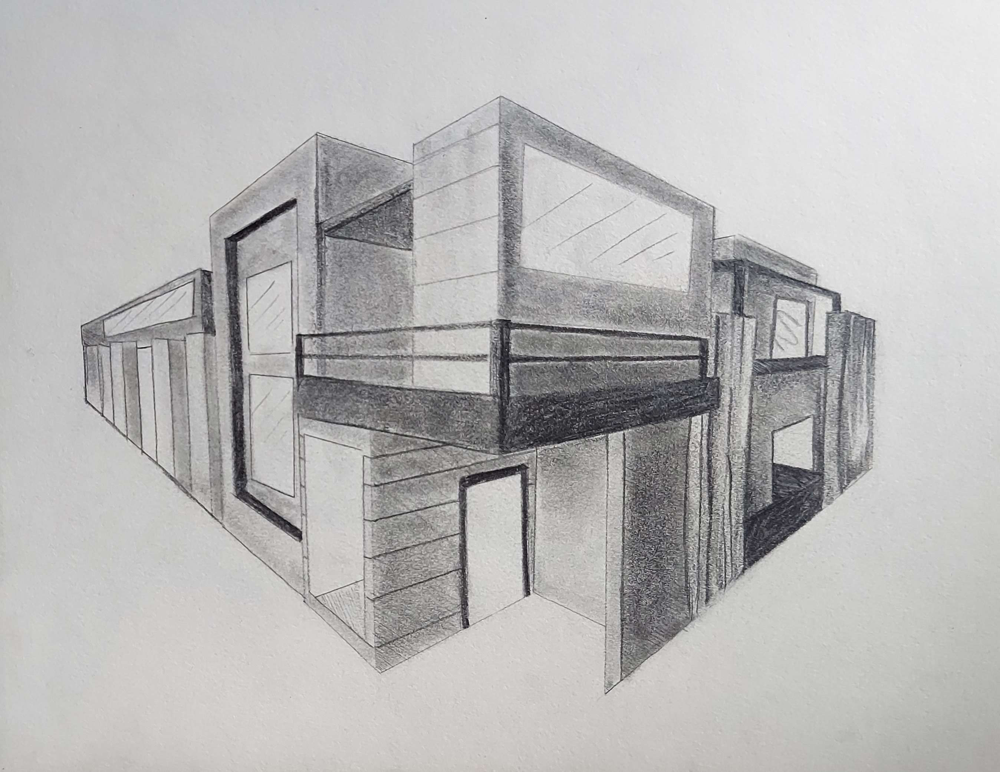

Pen drawings are a really fun and simple way to make art. I personally enjoy this medium a lot because it allows me to make really tiny details within the drawing, thus allowing for a more realistic display of art. Additionally, the lines that the black ink create make the artwork look so much more bold than it would be than that of a pencil or other medium. With this, I only need one pen to make pen drawings like these, therefore making it easily accessible. The only downside to pen art is that it can be reather stressful because pen can not be erased. However, going in with a pencil prior may help with this. I personally do this from time to time if I really want this art piece to be rather detailed.
 Painting is one of the first mediums that I originally used when I really wanted to get into art as I got older. I found that specifically acrylic paint was so much fun to play around with, and I basically stuck with it ever since. As I used acrylic paint more and more, I adored the use of basically single color paintings that were essentially minimalist in style. Bold lines, bold fills, and playing with the background color of the paper really interested me. Being able to design a work that is able to display an emotion using the least amount of materials needed is a fun challenge for me. Theownside is that acrylic paint can get expensive.
Pencil drawings are basically ol' reliable when it comes to art. Pencils are basically everywhere and are so simple to use in general. The capability to be able to erase something from the paper that I'm drawing on is really important at times. Additionally, pencil allows me to get proper shading in whenever I need it most. With the use of blending stubs, there are so many different saturations that a pencil drawing can display. Though this kind of medium can get quite messy as well, however it is really easy to wash off. With that being said, I've made most of my portraits using this medium.
 